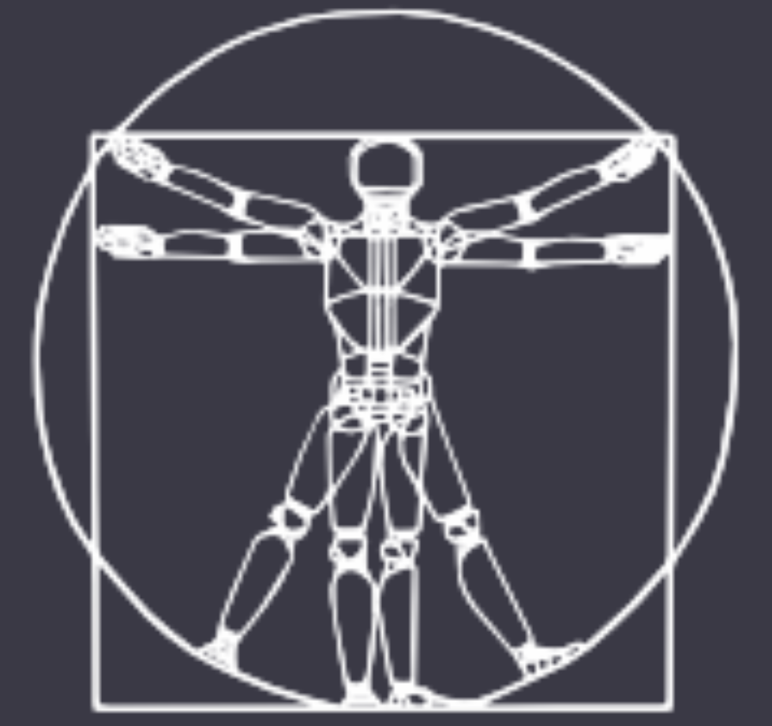

|  |
RSS Workshop: Topology meets RoboticsProposed event to be held in conjunction with Robotics: Science and Systems 2021 (RSS 2021) |
|---|
Several important advances in robotics over the past few decades were based on techniques drawing from the fields of algebraic and differential topology. Examples include robot navigation (e.g., Morse theory enabled Navigation Functions), SLAM (topological SLAM using landmarks, or neural-based topological SLAM), multi-robot systems (braids, topological invariance, homotopy/homology, clustering-based coordination), manipulation (knot theory) and robot design and control (study of the configuration space from a topological perspective, sequential/parallel composition of symbols). The appeal for topological techniques in robotics arises from the elegance of topological representations which offer symbolic and analytical abstractions of complex systems and behaviors, usually also associated with formal properties. Such abstractions enable robotic systems to perform reasoning at a higher or qualitative level, offering a level of interpretability that is difficult to engineer with alternative mathematical tools. At the same time, the compact representations offered by topological constructions open up possibilities for computational efficiency gains for existing computational techniques. Finally, topological representations may naturally provide a formal characterization of domains and environments where robotic systems are guaranteed to work reliably.
Even though topological methods rely mostly on theoretical work in mathematics, topology has always played a prevalent role in other disciplines. Established fields such as dynamical systems, fluid dynamics, or string theory leverage fundamental insights from topology. Moreover, topological methods have recently been widely adopted in cryptography, quantum computing, data analysis and machine learning. These applications have motivated the development of new tools and software that could be broadly applicable to a wide range of engineering problems. However, such tools are often inaccessible to the robotics community for reasons related to their steep learning curve, the extensive mathematical background required, or just due to the lack of crosstalk across the disciplines. Furthermore, the current applicability of topological methods is frequently limited to simple environments, as scaling to high dimensional settings often requires the development of new theoretical tools. This pushes robotics researchers to use alternative algorithms (e.g., sampling-based techniques for robot task and motion planning), which may offer practical results in selected situations but lack formal guarantees.
Hence, this workshop aims to bring together:
Our goal is to motivate an interactive exchange that will expose roboticists to topological tools that could be relevant to their applications towards accelerating progress in their field. Through a discussion-driven workshop, we seek to lay the foundations for organizing a community of researchers at the interface of topology and robotics.